신뢰
HONEST 보이는 그대로 말해요평수만 듣고 견적 내지 않아요. 상담하며 공간 상태를 자세히 여쭤보고, 무엇에 얼마가 드는지 항목별로 알려 드려요. 할 수 있는 것과 어려운 것도 처음부터 분명히 말할게요.
Just ask. We'll finish it.
입주·이사 청소부터 줄눈, 탄성코트까지. 집에 손이 필요할 때 한 번에 맡기세요. 서울, 인천, 경기.
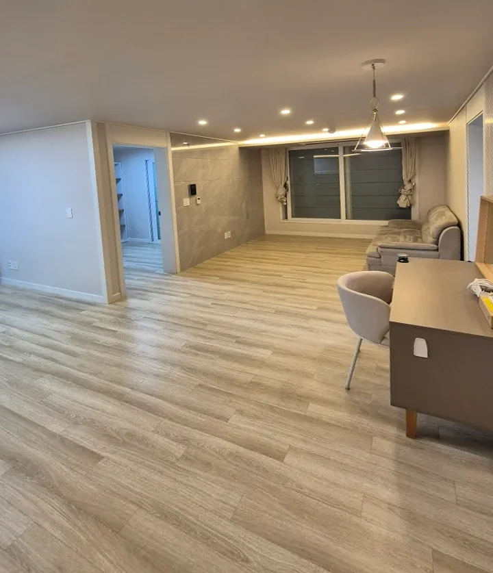
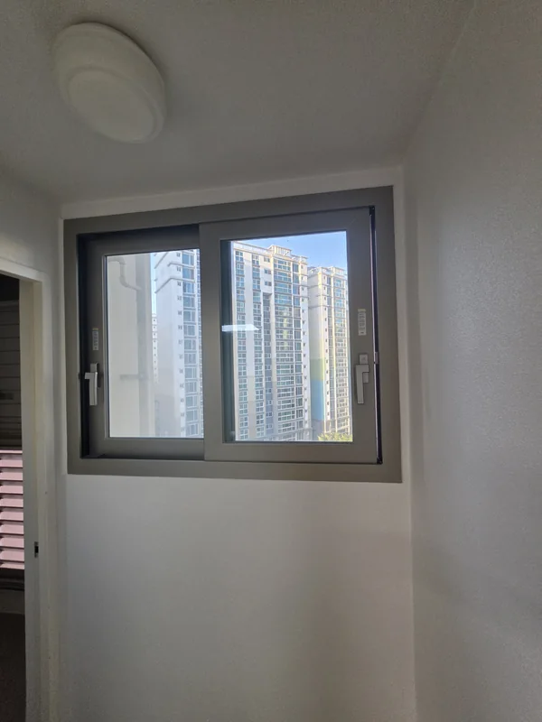
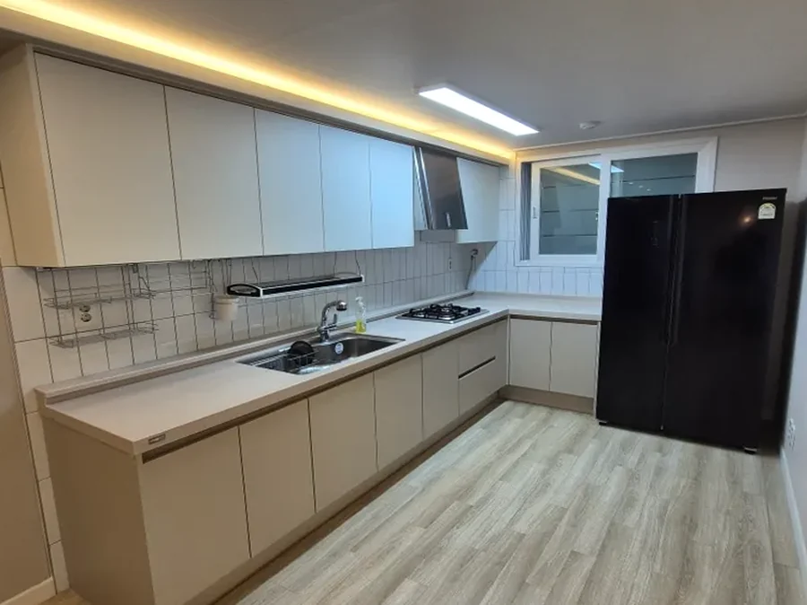
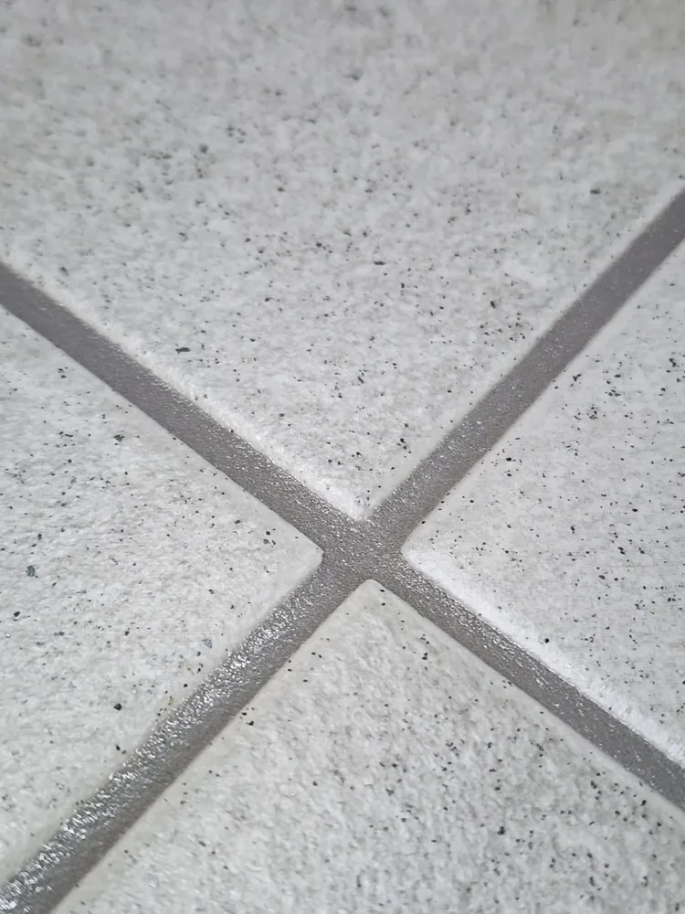
“이거, 누가
대신 좀 해줬으면.”그 한마디면
충분하도록.
퇴근하고 현관문을 열면, 쉬어야 할 집이 해야 할 일로 먼저 보이는 날이 있어요. 물때가 앉은 욕실 줄눈, 계속 미뤄 둔 베란다, 이사를 앞둔 빈집. 마음은 있는데 시간과 기운이 따라 주지 않는 순간이죠.
청소해JO.는 그 말을 가장 편하게 꺼낼 수 있는 곳이 되려고 해요. 설명이 길지 않아도 괜찮아요. 필요한 건 저희가 먼저 묻고, 직접 보고, 하나씩 챙길게요.
대신 일은 끝까지 해요. 로고 끝에 찍힌 작은 점처럼, 마무리까지 확인한 뒤에야 “다 됐습니다”라고 말해요.
말은 한마디로. 마무리는 마침표까지.
필요한 일이 무엇이든 같은 말로 부르시면 돼요. 여러 개를 맡기셔도 견적은 한 번에 받아 보실 수 있어요.
줄눈해JO.와 탄성해JO.는 청소해JO.의 시공 서비스예요.
청소, 줄눈, 탄성코트를 22초 영상에 담았어요. 실제 현장 사진이 들어간 긴 영상은 회사소개에서 볼 수 있어요.
후드, 창틀 옆면, 배수구, 냉장고 안. 놓치기 쉬운 곳부터 빼고 열어서 닦아요.
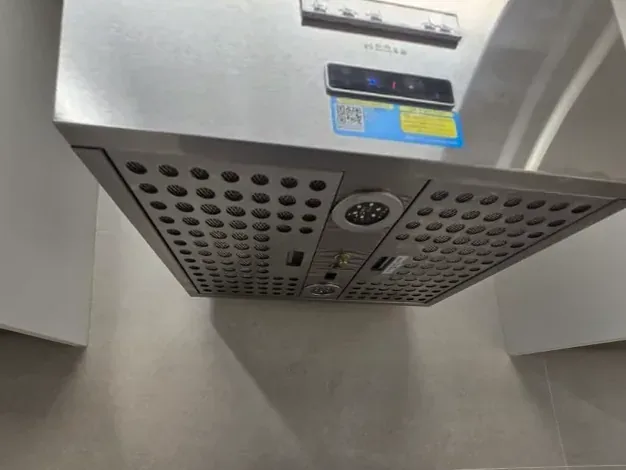
주방 후드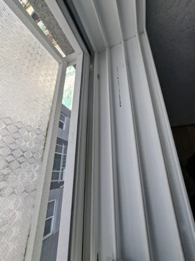
창틀 옆면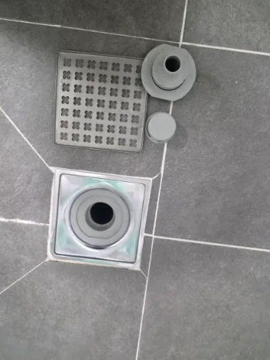
욕실 배수구 분해빼서 닦고,
열어서 닦고.
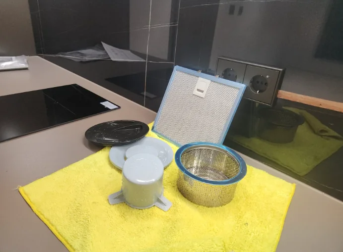
싱크대 배수구 분해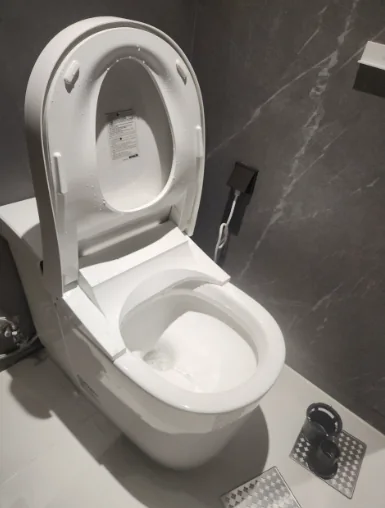
변기 안쪽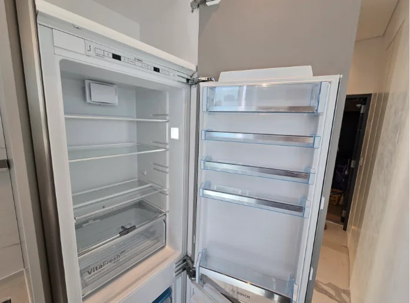
냉장고 안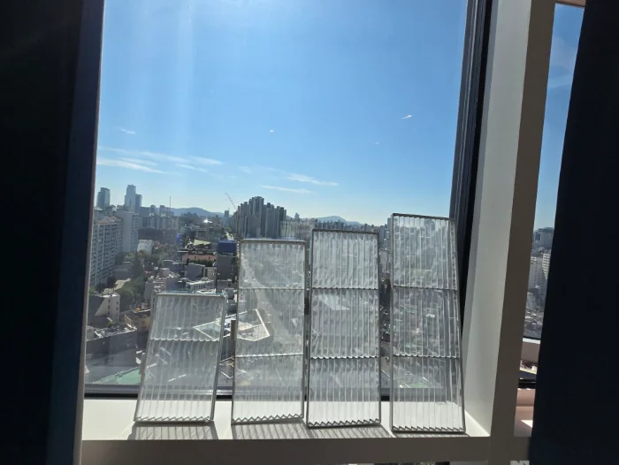
에어컨 필터 세척청소해JO.가 다녀간 현장이에요. 같은 자리를 작업 전과 후에 찍었어요. 가운데 손잡이를 밀어서 비교해 보세요.
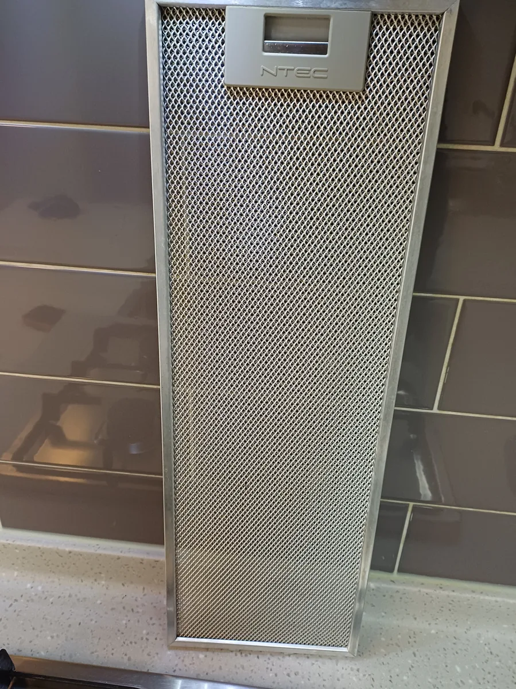
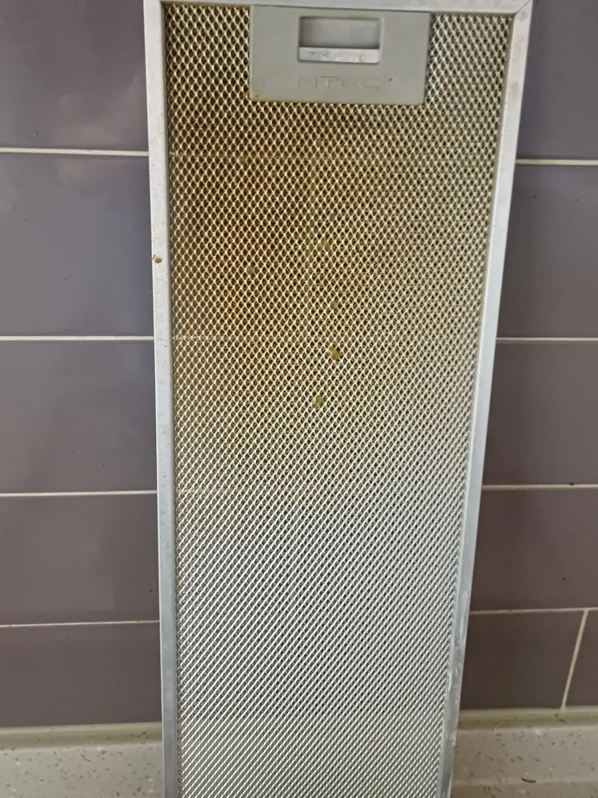
BEFOREAFTER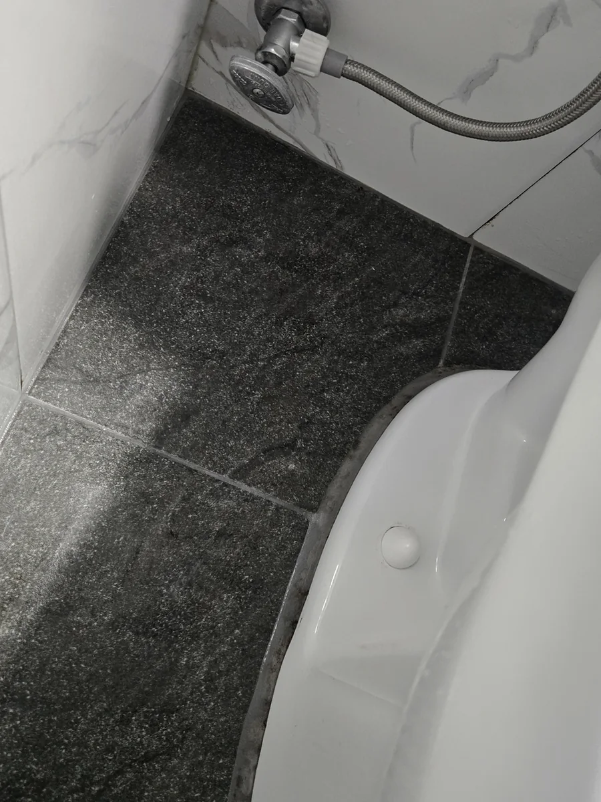
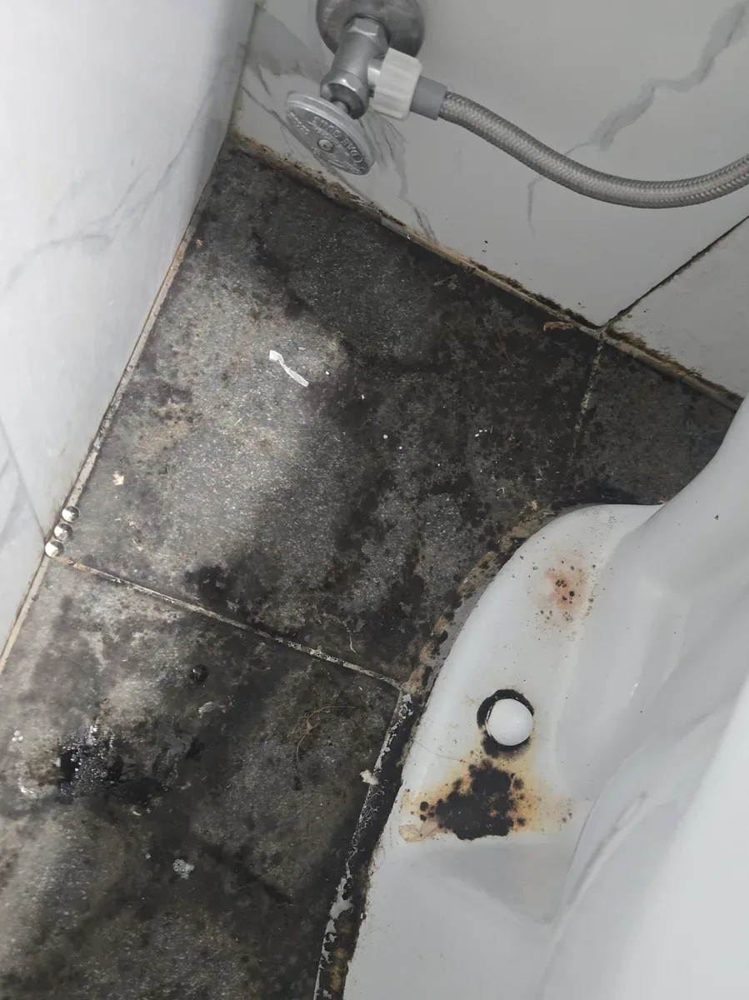
BEFOREAFTER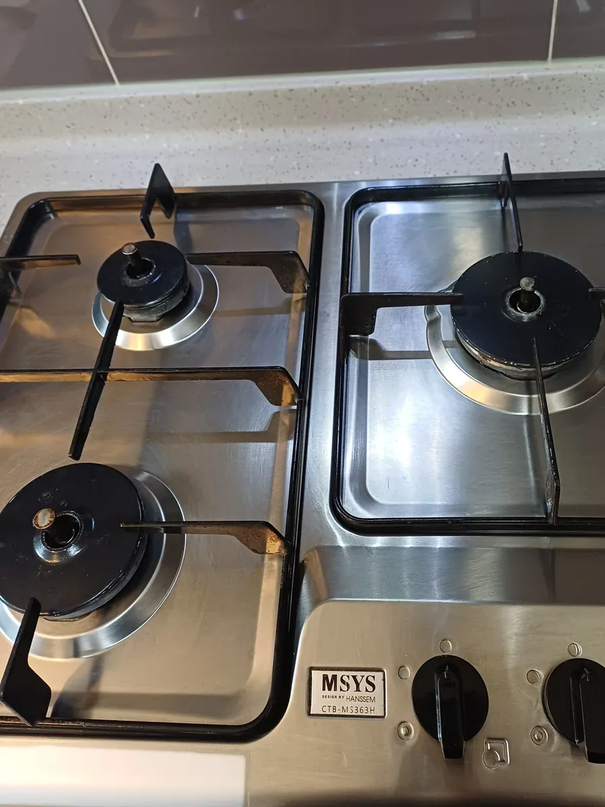
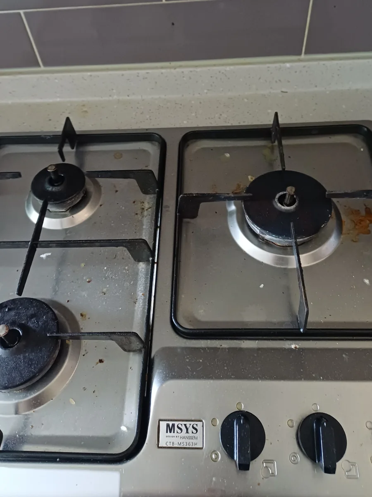
BEFOREAFTER공간을 고르면 하는 일이 나와요. 진한 색으로 표시된 일은 줄눈해JO.와 탄성해JO.가 맡아요.
문의부터 마무리까지 고객님이 하실 일은 처음 한마디와 마지막 확인뿐이에요.
공급 면적과 집 구조를 여쭤보고 견적을 안내해요. 소량의 예약금과 예약증으로 날짜를 잡아요.
청소 전날 전화로 시간을 한 번 더 맞춰요.
특이사항은 그때그때 말씀드려요. 끝나기 1시간쯤 전에 연락드리고 현장이나 사진으로 함께 확인해요.
잘 마무리됐는지 다시 여쭤보고, A/S가 필요한 곳을 함께 챙겨요.
평수만 듣고 견적 내지 않아요. 상담하며 공간 상태를 자세히 여쭤보고, 무엇에 얼마가 드는지 항목별로 알려 드려요. 할 수 있는 것과 어려운 것도 처음부터 분명히 말할게요.
서랍 레일, 문틀 틈, 환풍구 안쪽처럼 잘 안 보이는 곳일수록 한 번 더 닦아요. 다 됐다고 말하기 전에, 내 집에 들어설 때처럼 한 바퀴 더 둘러볼게요.
사진 한 장에 예쁘게 나오는 것보다, 살면서 오래 유지되는 결과를 먼저 생각해요. 관리하는 방법까지 알려 드릴게요.
작업을 마치면 고객님과 한 곳씩 확인해요. 아쉬운 곳이 보이면 그 자리에서 말씀해 주세요. 끝난 뒤에도 기간 안에 불편한 곳이 생기면 연락만 주세요.
숨고 별점 5.0 · 후기 208건 · 2026년 10월 기준 · 숨고에서 보기
실제 청소 당일에도 구석구석 손이 닿지 않는 곳까지 정말 깨끗하고 꼼꼼하게 작업해 주셨어요. 마감 상태도 너무 만족스럽고, 진행 과정도 친절하게 안내해 주셔서 믿고 맡길 수 있었습니다.
일단 정말 친절하시고, 청소도 일반적으로 개인이 해주시는 청소랑은 확실히 다릅니다. 특히 창문을 아예 다 분리해서 하나하나 꼼꼼하게 닦아주시는 거 보고 정말 제대로 해주신다는 느낌을 받았어요.
시간 맞춰오셔서 신속하게 작업해주셨어요 꼼꼼히 하나하나 체크해주셨구 가시다가도 또 한번 들러 체크하는 전문성에 놀랍고 감사했습니다